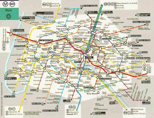

First of all, get the file graphestp3.tar.gz and uncompress it :
gunzip graphestp3.tar.gz
tar xvf graphestp3.tar
rm graphestp3.tar
cd GraphesTp3; ls
This archive contains C programs for manipulating graphs. Documentation of these programs can be found here:
Reminder on the two first practical sessions: description of the data structures used to represent a graph by Γ (its successors map). Also remind to refer to the documentation of the source code, including:
|  |
The RATP (public transportation company in Paris) provides its users with an interactive service that finds the shortest route between two subway stations chosen by the user. Our goal in this session is the design and development of a simplified version of such software. We will also consider the most effective strategies to solve problems of the same type.
0. The data
You will find in the file metro_complet.graph a network constructed as follows:
Visualize the graph of Paris metro, using the programs graphe2ps.exe and display:
make graphe2ps.exe
graphe2ps.exe metro_complet.graph
display metro_complet.graph.eps
1. Dijkstra in the metro
Implement Dijkstra algorithm studied in course (see lecture 4, slide 15). Find below a short description of the requested function:
/* ====================================================================== */
/*! \fn void Dijkstra(graphe * g, int x)
\param g (entrée) : a network. The length of each arc must be stored in
the field v_arc of the structure cell.
\param x (entrée) : a vertex of g.
\brief compute, for each vertex y of g, the length Dx(y)of a shortest path
from x to y. This length is stored in the field
v_sommets of the structure g.
*/
/* ====================================================================== */
Test your program on a small graph of your choice (this one for instance), then on the graph of the metro.
Useful functions:
2. Shortest path
Implement an algorithm (based on the values returned by Dijkstra) for computing a shortest path from a vertex x to a vertex y. Find below a short description of the requested function:
/* ====================================================================== */
/*! \fn graphe * SP(graphe * g, int x, int y)
\param g (entrée) : a network. The length of each arc must be stored in
the field v_arc of the structure cell.
\param x (entrée) : a vertex of g (start).
\param y (entrée) : a vertex of g (arrival).
\return a shortest path from x to y in g.
\brief returns a shortest path from x to y in g.
*/
/* ====================================================================== */
Computation time can be improved by terminating Dijkstra when the vertex y is reached.
Test your program on a small graph of your choice, then on the graph of the metro. Visualize (see EPSGraphe) the obtained shortest path for a few trips in the metro.
Useful functions:
3. Improvement of Dijkstra
In Dijkstra algorithm, the vertices of S\ can be divide into two subsets:
In the basic version of Dijkstra algorithm, we search for vertex of minimum value in [T union U]. The algorithm can be significantly improved by introducing a variable that represent the set T (as a list) in order to restrain the search to that set.
Implement this improvement and test it.
Useful data structures and functions found in the graphaux.h and graphaux.c files:
4. Improving the estimation of the time of the journey
In the previous method, we do not take into account the time taken by the metro when it stops at a station. We would like to add to the estimation of the total time of the route an average waiting time of 20s for each stop. To this end, there exist two kinds of solutions:
Explain how to proceed in each case (no implementation is required).
Acknowledgement
We thank RATP for the data available on its web site. We also thank L. Granboulan and L. Mauborgne from ENS, authors of a Practical Session on finding shortest path in the metro which inspired the subject of this practical session.